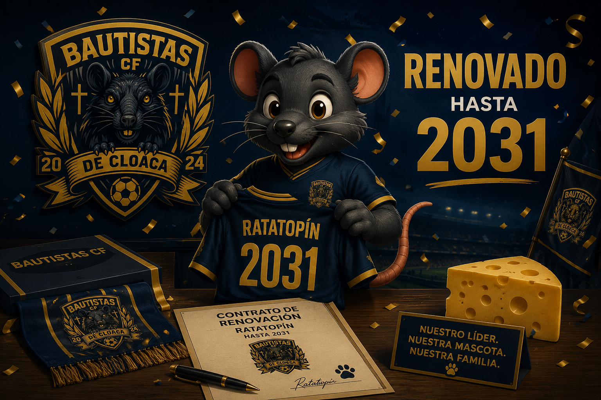
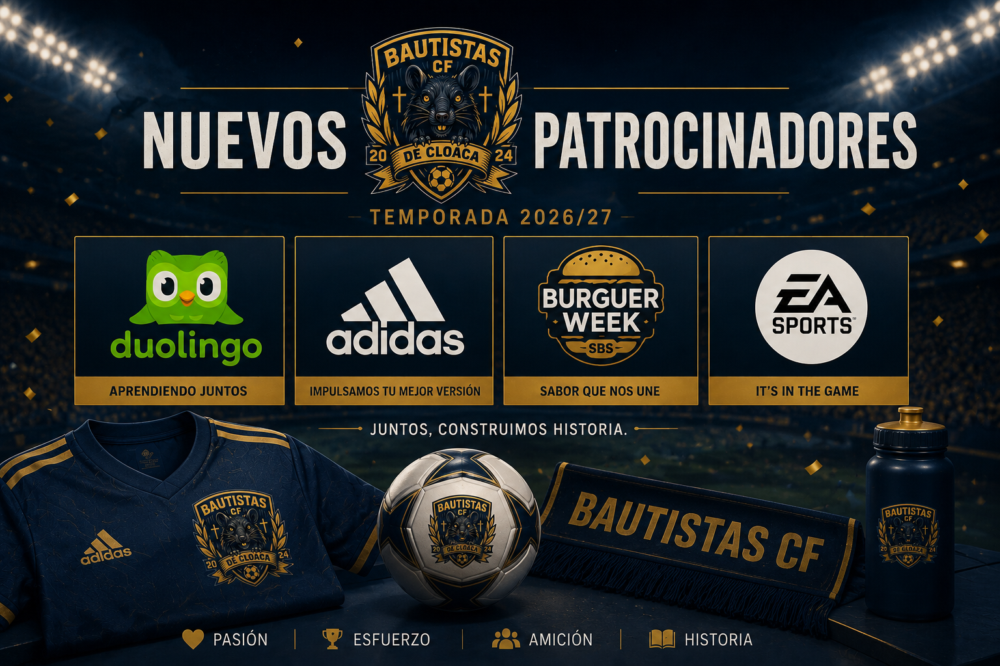
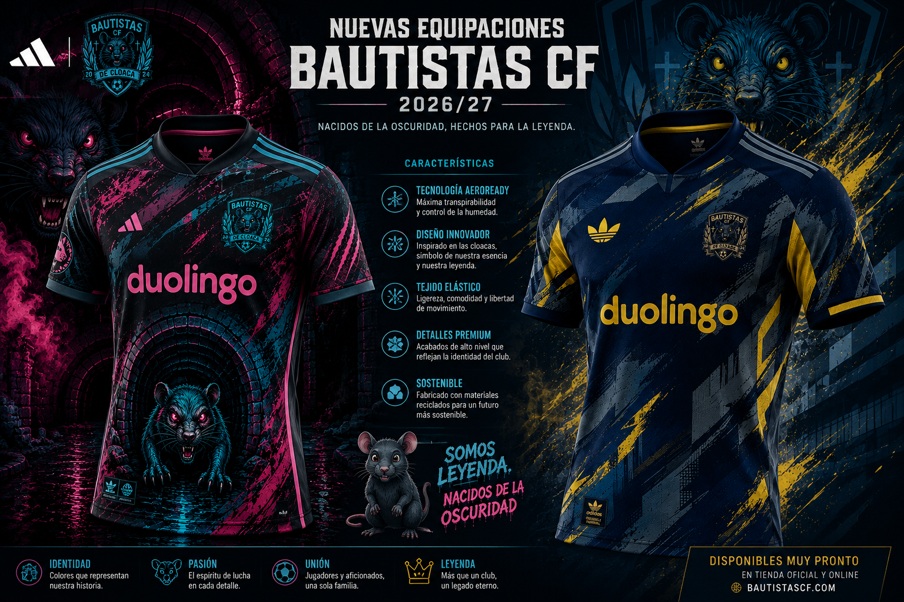
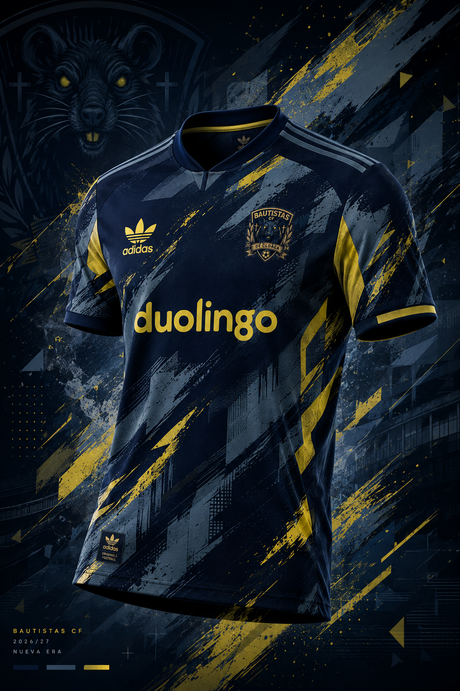
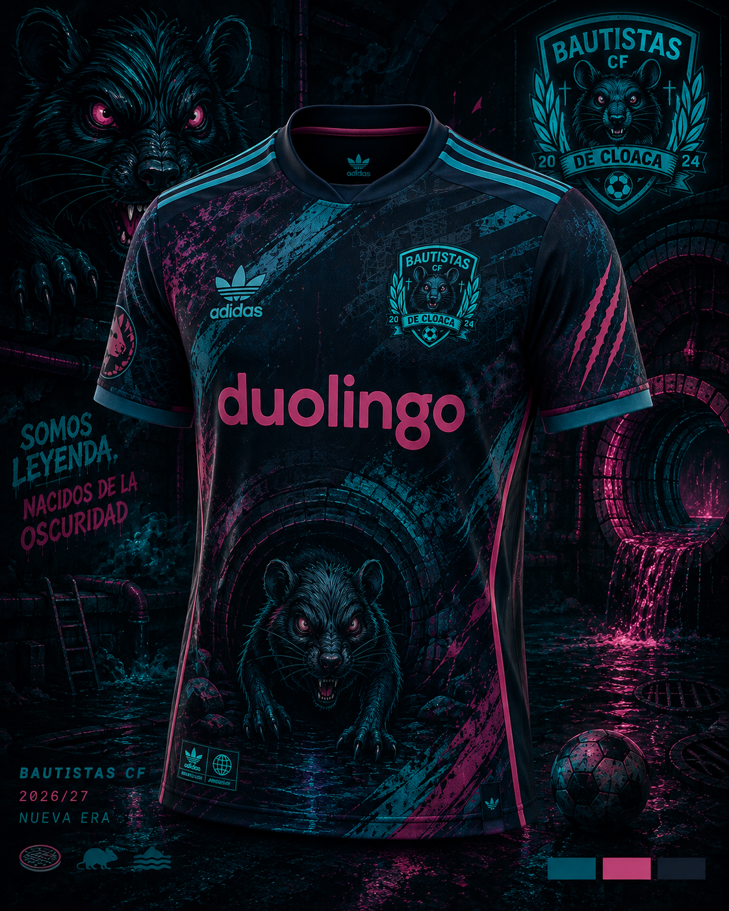
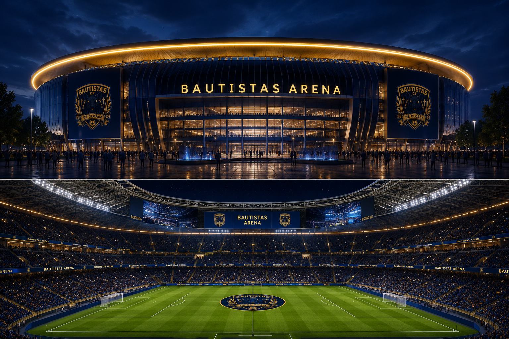

Ratatopín renueva hasta 2031
La mascota oficial del club continuará liderando el espíritu bautista durante cinco temporadas más.
Leer más Bautistas CF
Bautistas CF
Todo lo que un verdadero Bautista necesita: merch, noticias, anuncios y la esencia del club en un solo lugar.
Toda la actualidad del Bautistas CF.

La mascota oficial del club continuará liderando el espíritu bautista durante cinco temporadas más.
Leer más
El club da la bienvenida a las marcas que formarán parte de la familia Bautista esta temporada.
Leer más
Descubre la nueva piel del Bautistas CF.


Conoce a todos los jugadores del Bautistas CF.

Descubre la casa del Bautistas CF, un estadio diseñado para vivir cada partido de una forma única y donde nacen algunas de las Bautistadas más históricas del club.
Un espacio pensado para jugadores, socios y aficionados, combinando espectáculo, tecnología y la esencia del Bautistas CF.
Conocer el Estadio